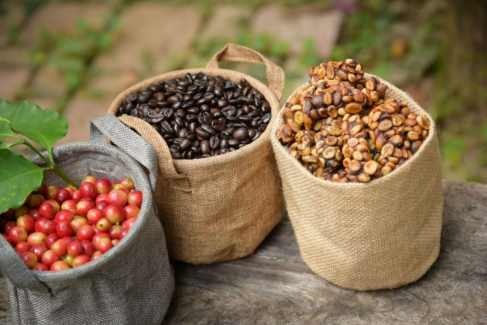
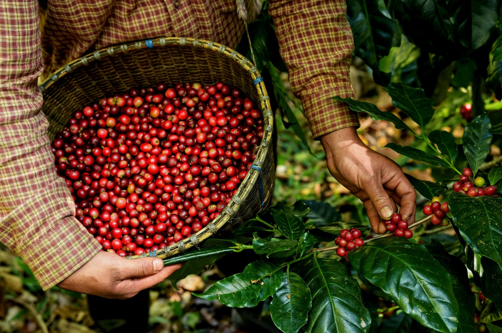
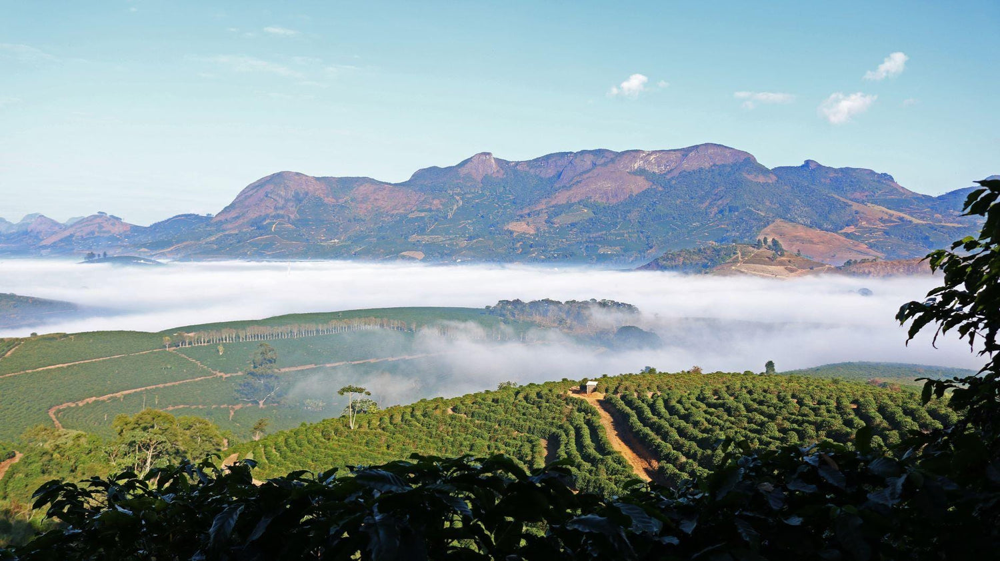
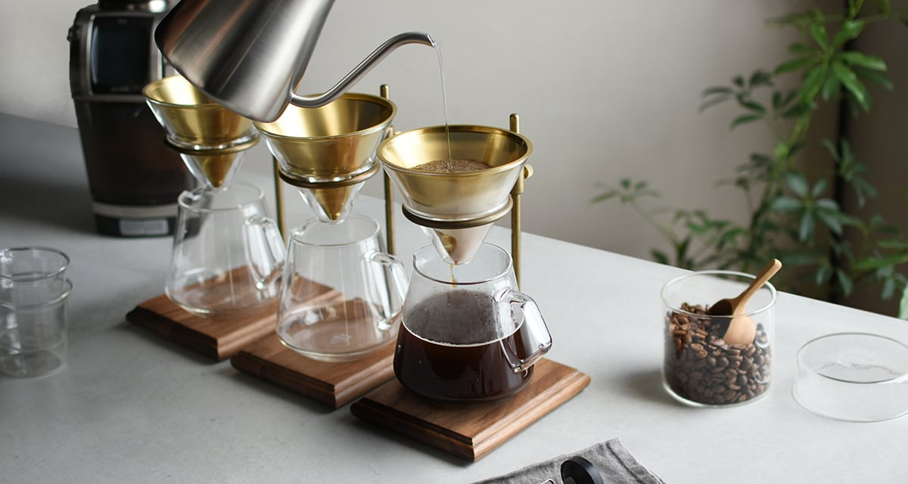
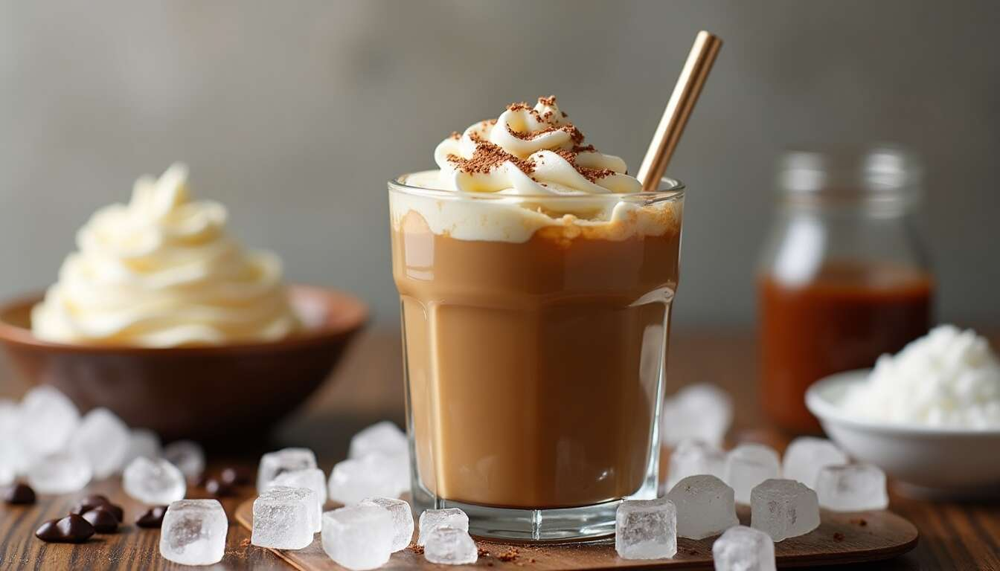
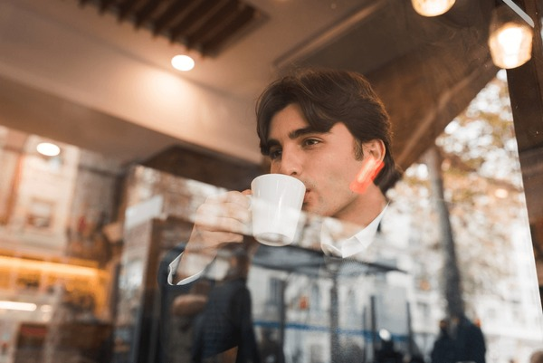

Éthiopie – Yirgacheffe
Café de haute altitude aux arômes floraux, avec des notes de jasmin, d’agrumes et une acidité élégante.
L’expérience café, réinventée pour vos sens
Zakariae Coffee est né d’une passion profonde pour le café de spécialité. Chaque détail, du choix des grains à la présentation, est pensé pour offrir une expérience sensorielle complète.

Café de haute altitude aux arômes floraux, avec des notes de jasmin, d’agrumes et une acidité élégante.

Un café équilibré et rond, révélant des notes de chocolat noir, de caramel et de fruits rouges.

Café doux et velouté, aux saveurs de noisette, cacao et sucre brun.
Choix rigoureux des meilleurs grains.
Maîtrisée pour révéler les arômes.
Chaque tasse est préparée avec précision.

Extraction intense révélant toute la puissance du café.

Méthodes douces pour une dégustation raffinée.

Fraîcheur et équilibre, sans compromis.

Un café onctueux avec une mousse de lait légère et veloutée.

Un équilibre parfait entre espresso et lait micro-mousse pour les amateurs de douceur.

Espresso chaud servi sur une boule de glace vanille pour une gourmandise unique.

Mélange crémeux de café et lait avec une touche artistique.

Alliance de chocolat et café pour une gourmandise intense.

“Un café exceptionnel dans un cadre élégant.”
— Client fidèle
“La meilleure expérience café que j’ai connue.”
— Amateur de café“Chaque visite ici est un véritable moment de détente, le café est exquis et l'ambiance parfaite.”
— Cliente fidèle“Un lieu où l'on oublie le temps : le parfum du café et la chaleur du décor vous accueillent à chaque instant.”
— Passionné de caféQue vous soyez seul avec votre livre préféré ou entre amis pour une conversation animée, laissez le temps s’arrêter et savourez chaque gorgée de votre boisson.
Laissez-vous envelopper par la douce musique en fond, le cliquetis discret des tasses et l’arôme réconfortant du café fraîchement préparé.
Profitez d’un coin tranquille pour lire, travailler ou simplement rêver, ou installez-vous à la table centrale pour partager rires et discussions. Notre café est conçu pour que chaque visite soit une pause hors du temps, un petit refuge chaleureux au cœur de votre journée.
| Jour | Horaires | 😄 |
|---|---|---|
| Lundi – Vendredi | 8h – 22h | Pour bien commencer la journée ou finir en douceur. |
| Samedi – Dimanche | 9h – 23h | Pour un brunch gourmand ou un café en soirée. |
Notre équipe est là pour vous offrir un service chaleureux et attentionné à chaque visite.
Téléversez une image de votre boisson préférée et laissez notre Boisson Detector la reconnaître instantanément !
☕ Préparation de l’IA…